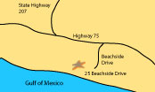

Reservations
About
When you arrive at The Striped Umbrella, check in at The Club House. Look for the signs that will direct you to registration. Our beautiful clubhouse is the home base for our registration offices, The Sand Crab Cafe, and The Sea Spa. Registration is open from 8:00 a.m. until 6:00 p.m. Please call to make arrangements if you plan to arrive after 6:00 p.m. The cafe and spa hours are both posted and listed in the information packet that you will receive when you arrive. The main swimming pool is directly behind The Club House. A lifeguard is on duty from 8:00 a.m. until 9:00 p.m. The pool area includes a wading pool, a lap pool, and a large pool with a diving board. Showers are located in several areas for your use before and after swimming. We also provide poolside service from the cafe for snacks and lunch.
Click the map below to view a larger image.
Awards
- Voted Best Resort in Florida.
- Voted top 10 places to visit in Florida.
- Voted best chocolate cake in Florida, 3 years in a row!
Don't forget book your accomodations through Expedia for your chance to win a free piece of our world famous chocolate cake!
The Sand Crab Cafe
When you arrive at The Striped Umbrella, check in at The Club House. Look for the signs that will direct you to registration. Our beautiful clubhouse is the home base for our registration offices, The Sand Crab Cafe, and The Sea Spa. Registration is open from 8:00 a.m. until 6:00 p.m. Please call to make arrangements if you plan to arrive after 6:00 p.m. The cafe and spa hours are both posted and listed in the information packet that you will receive when you arrive. The main swimming pool is directly behind The Club House. A lifeguard is on duty from 8:00 a.m. until 9:00 p.m. The pool area includes a wading pool, a lap pool, and a large pool with a diving board. Showers are located in several areas for your use before and after swimming. We also provide poolside service from the cafe for snacks and lunch.
The Sea Spa
When you arrive at The Striped Umbrella, check in at The Club House. Look for the signs that will direct you to registration. Our beautiful clubhouse is the home base for our registration offices, The Sand Crab Cafe, and The Sea Spa. Registration is open from 8:00 a.m. until 6:00 p.m. Please call to make arrangements if you plan to arrive after 6:00 p.m. The cafe and spa hours are both posted and listed in the information packet that you will receive when you arrive. The main swimming pool is directly behind The Club House. A lifeguard is on duty from 8:00 a.m. until 9:00 p.m. The pool area includes a wading pool, a lap pool, and a large pool with a diving board. Showers are located in several areas for your use before and after swimming. We also provide poolside service from the cafe for snacks and lunch.